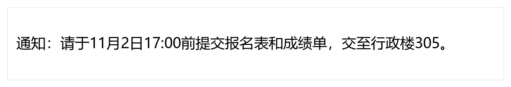
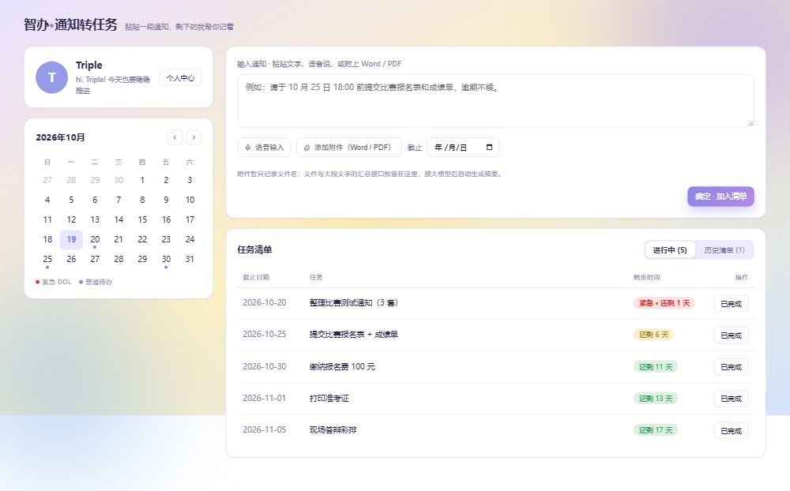

参赛作品介绍文档 队伍：Triple Y（A 李丹阳 / B 敬柯盈 / C 方可圆） 项目仓库：https://github.com/sssweetis/chuanzhi-cup-ai-web_Triple-Y 文档版本：2026-10-30
「不漏办」是一款面向校园与职场办事场景的 AI Web 应用。用户粘贴一段通知文字、上传通知截图，或上传文字型 PDF，系统会把非结构化通知转换成一份结构化办事清单：
一句话：把“读完就忘”的通知，变成“可以照着做”的清单。

图 1：演示数据包中的通知截图，可直接上传走截图识别流程。

图 2：项目早期界面原型（用于说明布局；最终界面以当前前端代码为准）。
三档结构自适应 不是所有通知都给一堆字段。系统按复杂度输出 simple / standard / complex，简单通知只保留必要信息，复杂通知才展开审核、依赖、预警。
每条要求可追溯
材料、步骤、待办、截止时间都可以带 source_ref.quote；没有原文依据的内容标为“系统建议”，不把 AI 补充伪装成原文。
从“读通知”到“能执行” 输出不是一段总结，而是可勾选材料、可排序步骤、可保存待办、可导出清单。
补充通知有“预览—确认—留档” 改期、新增材料、删除材料先对比；没写“以此为准”时要求用户确认；确认后才更新并保留旧版本内容。
多模态与降级 文字、截图、文字型 PDF 共用一套抽取管道；视觉模型不可用降级本地 OCR，无 Key 走离线 Mock，页面不白屏。
真实模型已落地 团队 Key 使用 DeepSeek Flash，真实文本 / 截图 / PDF / RAG / Function Calling 已完成首轮验收。
deepseek-flash；/health 返回 mode=real。| 测试 | 结果 |
|---|---|
preflight.py 演示前自检 |
13/13 |
smoke_test_hardening.py 加固测试 |
19/19 |
smoke_test_acceptance.py 三档验收 |
simple / standard / complex 3/3 |
| A 侧确定性测试 | 95/95 |
| 真实文本样本 | 3 条通过，单条约 20–42s |
| 真实截图 | 通过，约 9.6s，日期归一化为 ISO |
| 真实 PDF | 通过，约 21.6s |
| RAG 追问 | 材料内回答附出处；材料外明确拒答 |
| 日期工具 | 真实 Function Calling，tool_trace 可见 |
docs/demo-kit/，包含普通通知、完整流程、截图、文字型 PDF、补充通知对、标准答案；docs/AI侧测试用例与答案.md、docs/第三阶段测试用例.md；| 技术点 | 实现 |
|---|---|
| 结构化抽取 | Prompt + JSON Schema + 代码字段裁剪；三档模式；空字段修补 |
| 防幻觉 | source_ref.quote、is_suggestion、无依据拒答、外部材料库约束 |
| RAG | 文本切片、片段编号、中文二元组 / LCS 检索、Top-K 上下文、附出处回答 |
| 多模态 | 截图视觉模型、RapidOCR 兜底、文字型 PDF pypdf/pymupdf |
| Agent / 工具调用 | check_date Function Calling、工具轨迹、失败兜底 |
| 通知变化 | 两份 Matter 差异、增量合并、受影响待办、用户确认、change_log |
| 工程化 | FastAPI、Vite、本地 JSON 原子写、Docker、Render/VPS 部署配置、会话隔离、限流 |
| 可测试性 | 9 套后端自测、A 侧 95 项确定性检查、preflight 一键自检 |
docs/demo-kit/04-通知截图.png）；homepage-prototype/_shots/主页_desktop.jpg）；本项目未发表过，也未获奖过。
本项目为本次比赛独立开发。Git 历史从团队自研的文字通知解析原型开始，后续在本项目内迭代出三档结构、RAG、多模态、补充通知对比、日期工具、会话隔离等能力；未基于其他现成开源项目做二次开发。
当前版本优先保证“可演示、可核验、可执行”，仍有清晰边界：
X-Session-Id 提供浏览器会话隔离，但不是登录鉴权；账号体系、多人协作、权限管理属于后续规划；后续迭代方向：向量检索与重排、复杂条件分支、多文件合并、日历/飞书同步、多人协作、移动端体验优化。